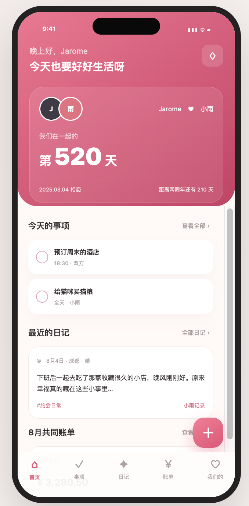
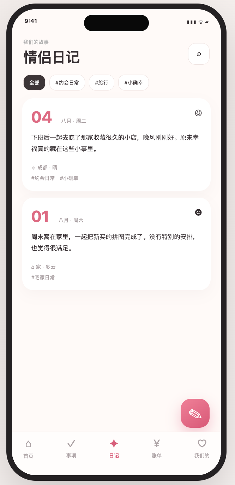
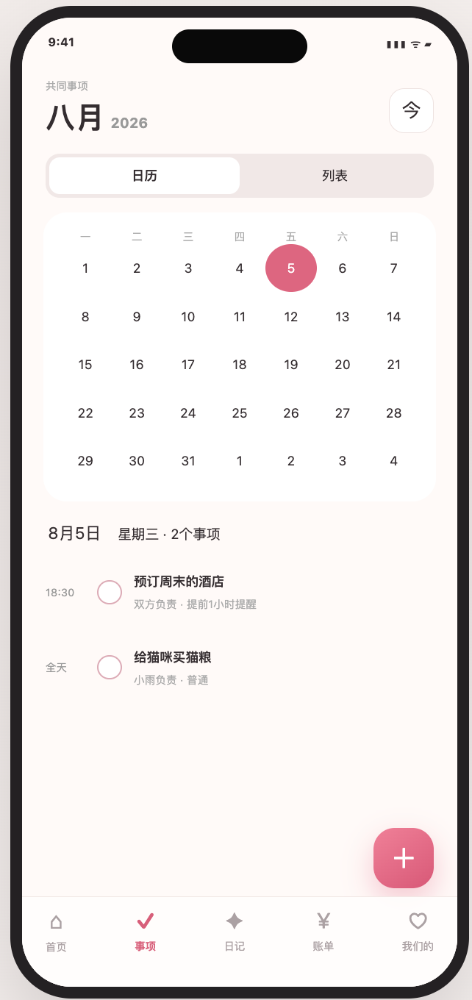
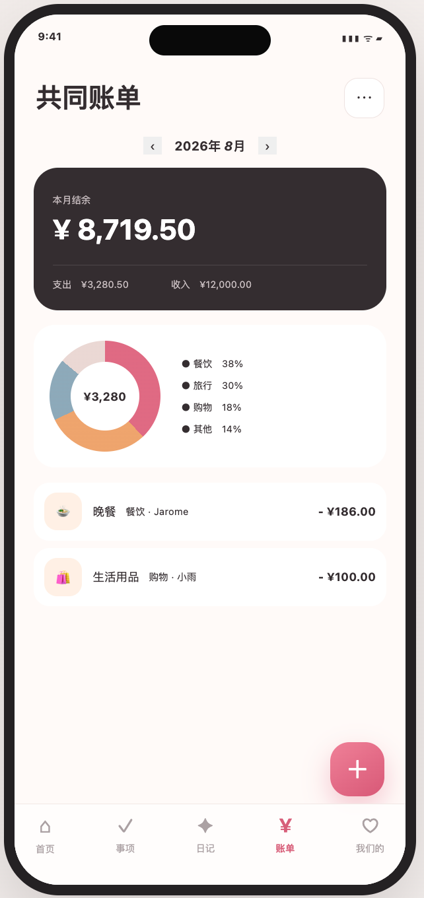

A space for two
把共同生活，放进一个温暖的空间
专注情侣二人关系，强调私密、温暖与轻量化，让事项、日记和账单真正服务于两个人的日常经营。
- 创建情侣空间并邀请另一半加入
- 展示恋爱纪念日与在一起天数
- 共同管理事项与日程
- 撰写、搜索和管理情侣日记
- 记录共同账单并查看月度统计
- 消息通知、个人资料和空间设置
Product screens
关键页面
通过四个核心页面，呈现两个人从记录日常到共同管理生活的完整体验。




从小程序到可靠的共享空间
前端采用微信小程序原生开发，后端使用 TypeScript 与 NestJS 提供 REST/OpenAPI 契约，配合 Prisma、MySQL、Redis 与 JWT 完成数据和身份能力。
JavaScriptWXMLWXSSTypeScriptNestJSPrismaMySQLRedisJWTREST / OpenAPI